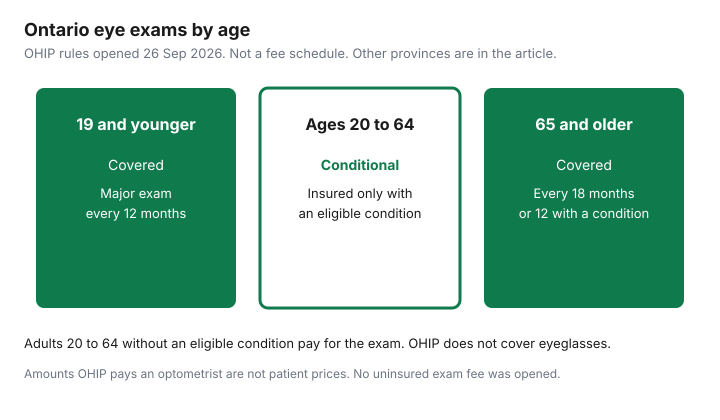

Healthcare · Canada
Are Eye Exams Covered in Canada? Provincial Rules by Age, and How to Pay Less When They're Not
An adult eye exam in Canada is insured, partly insured, or entirely your bill depending on the province, your age, and whether an eye disease is on that province’s list. Ontario is the clearest case this draft could open in full, so it leads. British Columbia and Quebec are included from government pages. Alberta is included from the provincial association’s description, with a warning to confirm it on the Alberta Health page, which this draft did not open. Nothing here is medical advice about how often you personally should be examined. It is a coverage map, and a way to leave the exam with a prescription you can shop.
Key takeaways
- OHIP, on the page updated 22 April 2026, covers one major eye exam every 12 months for people 19 and younger, and for people 20 and older who have an eligible eye condition. People 65 and older without such a condition are covered every 18 months.
- Adults 20 to 64 without an eligible condition are not covered. A physician’s E077A referral no longer creates an insured optometrist exam. That change dates from 1 September 2023.
- The eligible-condition list includes diabetes and a defined glaucoma category. It is not “any eye complaint.”
- No uninsured exam price was opened. OHIP’s payments to optometrists are not patient prices and are not printed here.
- The College of Optometrists says the spectacle prescription is provided at no extra charge. OHIP does not cover the glasses. Shopping is the next guide.
Ontario: covered under 20 and 65+, and adults 20–64 only with eligible conditions
Ontario’s “what OHIP covers” page, updated 22 April 2026, and the College of Optometrists of Ontario funding guide, opened the same day this article was checked, agree on the age bands. Children and youth 19 and younger get one major eye exam for vision and general eye health every 12 months. The Ontario page says any minor assessments needed are covered for that group. The college’s wording for that group is “OHIP eligible minor assessments.” Use the office to confirm a follow-up is insured before you pay it.
If you are 20 or older and you have an eligible medical condition affecting your eyes, OHIP covers one major exam every 12 months and two additional follow-up minor assessments. If you are 65 or older and you do not have an eligible condition, OHIP covers one major exam every 18 months and two follow-up minor assessments. Bulletin 230902, issued 31 August 2023, says the 18-month rule for seniors without an eligible condition, and the continued 12-month rule for seniors with one, took effect 1 September 2023. The same bulletin says a physician referral on fee code E077A no longer produces an insured optometrist exam. Patients can still receive an insured physician eye exam when a physician refers to another physician on that form. A physician major eye exam or periodic oculo-visual assessment remains every 12 months. If the first claim in the period was a physician service, the bulletin says you are not then eligible for insured minor assessments from an optometrist in that period, including some post-cataract visits. Ask who is billing before you book both.
Adults 20 to 64 with no eligible condition are not covered. The college says those patients pay out of pocket, through personal insurance, or through one of the assistance programs on its page. OHIP does not cover eyeglasses or contact lenses. That sentence is on the same Ontario page, in the list of services OHIP does not cover. The exam and the glasses are different purchases. The glasses guide starts when you have the prescription.
Other provinces at a glance (verify at draft)
British Columbia’s HealthLink BC optical-coverage page says eye exams for adults aged 19 to 64 are not covered by the Medical Services Plan unless medically required. It also says routine eye-exam coverage is provided to seniors 65 and over and to children 18 and under, and that adults receiving income or disability assistance can have routine exams every two years, plus help with glasses. Medically required exams remain a benefit at other ages. The detailed diagnosis list lives on the practitioner eye-examination benefits page. Do not treat a glasses update as a medical necessity.
Quebec’s health-insurance page for optometric services says services can be free if you are insured and you are under 18, or 65 or over, or you have been a financial-assistance recipient with a claim slip for at least 12 consecutive months and you are 18 to 64, or you are 60 to 64 on a spouse’s allowance with a claim slip, or you have a visual impairment and are registered with a recognized visual-aid facility. Frequency on that page: under 18, one exam a year; 65 or over, one exam a year; financial-assistance recipients 18 to 64, one exam every two years. An emergency exam for a sudden eye problem is covered for all insured persons who present a valid health-insurance card. Treatment is a separate question. The page says some services have restrictions.
Alberta’s Association of Optometrists says Alberta Health provides partial coverage toward one eye exam a year for children and for seniors 65 and older, renewing every 1 July, and that adults 19 to 64 are not covered for a routine exam. It also says optometrists can charge above the Alberta Health Care Insurance Plan benefit for an insured service they consider to exceed that benefit, and that they must discuss fees first. That is an association page, not an alberta.ca schedule this draft opened. Confirm the current AHCIP rule before you rely on the partial-coverage sentence. Other provinces were not opened. Use your provincial health plan’s optometry page, not a neighbour’s OHIP story.
| Province | Children | Adults roughly 20 to 64 | Seniors | What triggers coverage | Source date |
|---|---|---|---|---|---|
| Ontario | 19 and younger: one major exam every 12 months. | 20 to 64: insured only with an eligible eye condition, then every 12 months. | 65 and older: every 18 months without an eligible condition, every 12 months with one. | The condition list in the next section. Not a glasses prescription by itself. | OHIP page updated 22 April 2026. Bulletin issued 31 August 2023, effective 1 September 2023. |
| British Columbia | Routine coverage described for children 18 and under. | 19 to 64: not an MSP benefit unless medically required. Income or disability assistance: routine exam every two years. | Routine coverage described for age 65 and over. | Medically required diagnoses on the MSP practitioner page. | HealthLink BC optical coverage, opened 26 Sep 2026. |
| Alberta | Association: partial coverage toward one exam a year. | Association: routine exam not covered at 19 to 64. Medically necessary and urgent care may be partial. | Association: partial coverage for 65 and older, renewing 1 July. | Confirm on Alberta Health. Fees above the plan benefit must be discussed first, the association says. | Alberta Association of Optometrists page, opened 26 Sep 2026. Not an alberta.ca schedule. |
| Quebec | Under 18: one exam a year if insured. | 18 to 64: one exam every two years if a financial-assistance claim slip has been held for 12 consecutive months. Emergency exams for everyone insured. | 65 and over: one exam a year. | Age, claim slip, visual-impairment registration, or a sudden eye problem for the emergency exam. | RAMQ optometric services, opened 26 Sep 2026. |
What an uninsured adult exam costs, and why optometrists vs ophthalmologists matters
No dollar figure for a private adult exam is printed, because none was opened from a clinic or an association with a date. A forum guess is not a fee. OHIP’s payments to optometrists under the schedule of benefits are what the plan pays the optometrist for an insured service. They are not the price an uninsured adult is charged, and using them as a “cash price” would mislead you. Phone the office, ask for the major exam fee, and ask which tests are extra. Get that quote before you are in the chair.
Who examines you changes both the coverage and the bill. An optometrist is the usual examiner for a routine major oculo-visual exam. An ophthalmologist is a physician. Bulletin 230902 says physician major eye exams stayed on a 12-month eligibility, and that the optometry agreement did not change the physician schedule. A medically necessary physician visit can be insured when an optometrist exam for the same adult is not. That does not mean you should book a specialist to dodge an optometrist fee. Specialists see referred disease. If you are 20 to 64 with no eligible condition and you want a glasses prescription, you are in the uninsured optometrist path unless another program applies. If you have diabetes or glaucoma as defined below, ask the office to confirm the insured code before you pay.
The college funding guide also names programs that are not OHIP. ODSP may cover a routine exam and help with glasses and repairs when OHIP does not. Ontario Works may cover routine eye exams once every 24 months and may help with glasses. The Non-Insured Health Benefits program can cover an exam the province does not insure, for eligible First Nations and Inuit clients, either by direct bill at a registered provider or by reimbursement. The Interim Federal Health Program may partially cover an exam for people it insures, such as refugee claimants. The Assistive Devices Program is for long-term low vision, not for ordinary glasses. Each of those is a named program with its own page. Eligibility is theirs, not a line you add because the exam was expensive.
Using workplace vision benefits and the benefit-year calendar
A workplace vision benefit is a contract maximum, usually a dollar amount every 12 or 24 months, for exams, glasses, or both. The reset date is in the booklet. It may be 1 January, your hire anniversary, or a plan year that is neither. Booking in December and again in January only works when those two dates fall in different benefit periods. Read the period before you book the second exam. The employer-benefits guide is how a health spending account interacts with that maximum. An account that reimburses an uninsured exam still needs the receipt, and it still ends when the account’s own year ends.
If two workplace plans could pay the exam, the coordination guide is the order. Send the first plan’s explanation of benefits to the second. Do not assume both pay the full exam. A private gap policy is a different purchase. The gap-insurance guide is where to decide whether a vision rider is worth more than paying the uninsured exam in cash. Premiums over a year can exceed one exam. Price both.
Diabetes and glaucoma exams: when coverage kicks in
For adults 20 and older, Ontario’s page lists the conditions that make a major exam insured every 12 months. Diabetes mellitus is on the list. Glaucoma is on the list only in a defined way: glaucoma requiring or having had treatment with medication, laser (excluding prophylactic laser peripheral iridotomy), or surgery. A family history, or the word glaucoma in a conversation, is not that sentence. Cataract or posterior capsular opacification qualifies when visual acuity is 20/40 or worse in the best corrected eye, or when a surgery referral is made. Retinal disease, corneal disease, and optic-pathway disease qualify when acute or chronically progressive. Uveitis qualifies when acute or chronic during active inflammation. Acquired cranial-nerve palsy resulting in strabismus qualifies during the acute phase or until the condition resolves or stabilizes. Ocular drug-toxicity screening is listed for people taking hydroxychloroquine, chloroquine, ethambutol, or tamoxifen.
Bring the diagnosis, not a guess. The office has to bill an insured service against a condition the plan accepts. If you are 65 or older, you are covered on the 18-month routine schedule even without this list, and on the 12-month schedule if you are on it. If you are 20 to 64 and the condition is new, ask the prescriber and the optometrist whether it meets the wording above before you pay a private fee you might not owe. Follow-up minor assessments, up to two in the eligibility period, are part of the same insured package. A third visit may be uninsured. Ask.
Getting your prescription (PD included) so you can shop for glasses anywhere
The College of Optometrists practice reference, the version dated 27 June 2026, says a spectacle prescription is issued only after an appropriate examination, and that it must be provided to the patient without request and without additional charge, whether the exam was insured or uninsured. Extra copies may be charged. Patients have the right to fill the prescription at the dispensary they choose. Electronic prescribing has to be secure and unaltered. Ask for the prescription before you leave, even if the office also sells frames. Paying for the exam does not obligate you to buy the glasses there.
Pupillary distance is the measurement between the pupils that a dispenser uses to place the lenses. The practice reference opened for this draft requires a prescription and says the dispenser must meet the same standards online as in person. It does not, in the sections read, say that PD must already be printed on every prescription. Ask the optometrist or optician to record binocular PD and, if you will order progressives, monocular PD and segment height. A self-measured number is not a college method this page verified. The College of Opticians standards say an optician takes the measurements needed for the glasses being dispensed. If the clinic will not release PD, ask whether that measurement is part of the exam you paid for or part of a dispensing visit. Then read the glasses guide before you order online.
Out-of-pocket exam fees and prescription glasses can also be a tax question. Guide RC4065, the 2025 medical-expense guide opened 26 Sep 2026, lists vision devices, including eyeglasses and contact lenses to correct eyesight, as eligible when prescribed. The federal claim subtracts the lesser of $2,834 or 3 percent of line 23600. That guide’s ceiling is the 2025 figure in RC4065. The tax-credit guide is the household checklist, and a later indexed ceiling has to be confirmed for the year you file. This is not tax advice. Keep the exam receipt and the glasses receipt separate.

Sources & date stamps
- Ontario, what OHIP covers, updated 22 April 2026. Age bands, the eligible-condition list, and the statement that eyeglasses and contact lenses are not covered.
- OHIP INFOBulletin 230902, issued 31 August 2023. Changes effective 1 September 2023, including the 18-month senior rule and the end of E077A as a path to an insured optometrist exam.
- College of Optometrists of Ontario, funding options for eye examinations, opened 26 Sep 2026. ODSP, Ontario Works every 24 months, NIHB, IFHP, and ADP for low vision. Practice reference dated 27 June 2026: spectacle prescription at no extra charge.
- HealthLink BC optical coverage, opened 26 Sep 2026. RAMQ optometric services, opened 26 Sep 2026. Alberta Association of Optometrists vision-coverage page, opened 26 Sep 2026, and flagged as not an alberta.ca schedule.
- CRA guide RC4065 (2025): vision devices with a prescription; threshold the lesser of $2,834 or 3 percent of line 23600. Dropped: any uninsured exam price, because none was opened.
Frequently asked questions
Does OHIP cover eye exams for adults?
People 19 and younger are covered for one major eye exam every 12 months, and people 65 and older without an eligible eye condition are covered every 18 months. Adults 20 to 64 are covered for a major exam every 12 months only when they have an eligible eye condition on the Ontario list; without such a condition they pay for the exam, use a workplace vision benefit, or use another program such as Ontario Works or ODSP if they qualify. A physician referral using the old E077A code no longer makes an optometrist exam insured.
How often are seniors covered in Ontario?
If you are 65 or older and you do not have an eligible eye condition, OHIP covers one major exam every 18 months, plus up to two follow-up minor assessments in that period; if you do have an eligible condition, the major exam is every 12 months, again with up to two minor assessments. That split took effect 1 September 2023, while a major eye exam by a physician is still described as every 12 months. Confirm the last insured date with the office before you book.
Which medical conditions make an eye exam insured?
Ontario’s list, on the what-OHIP-covers page updated 22 April 2026, includes diabetes mellitus, glaucoma that requires or has had treatment with medication, laser, or surgery, with prophylactic laser peripheral iridotomy excluded, cataracts or posterior capsule clouding at a stated acuity or when a surgery referral is made, acute or chronically progressive retinal, corneal, or optic-pathway disease, uveitis while active, an acquired cranial-nerve palsy causing strabismus in the acute phase, and screening for toxicity from hydroxychloroquine, chloroquine, ethambutol, or tamoxifen. A mention of glasses is not on that list.
How much does an uninsured eye exam cost?
This page does not print a dollar fee, because no clinic or association price with a date was opened on 26 Sep 2026. Amounts OHIP pays an optometrist are payments to the optometrist, not a patient price, so they are not used as one. Ask the office for the exam fee and for any extra test before you sit down. If a workplace plan pays part of it, ask whether the office will bill the plan directly.
Can I get my prescription and PD to buy glasses elsewhere?
The College of Optometrists of Ontario practice reference says a spectacle prescription is provided without you having to request it and without an extra charge, whether the exam was insured or not, and you may fill it at the dispensary you choose. Pupillary distance is a measurement the dispenser uses, so ask for it in writing, including monocular measurements if you will order progressives. This page did not open a rule that forces PD onto every prescription. The glasses guide is the shopping step.